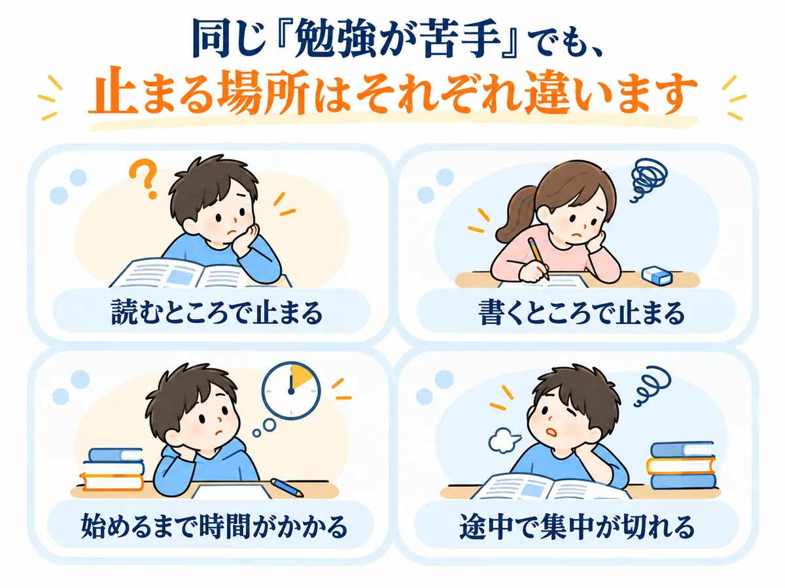
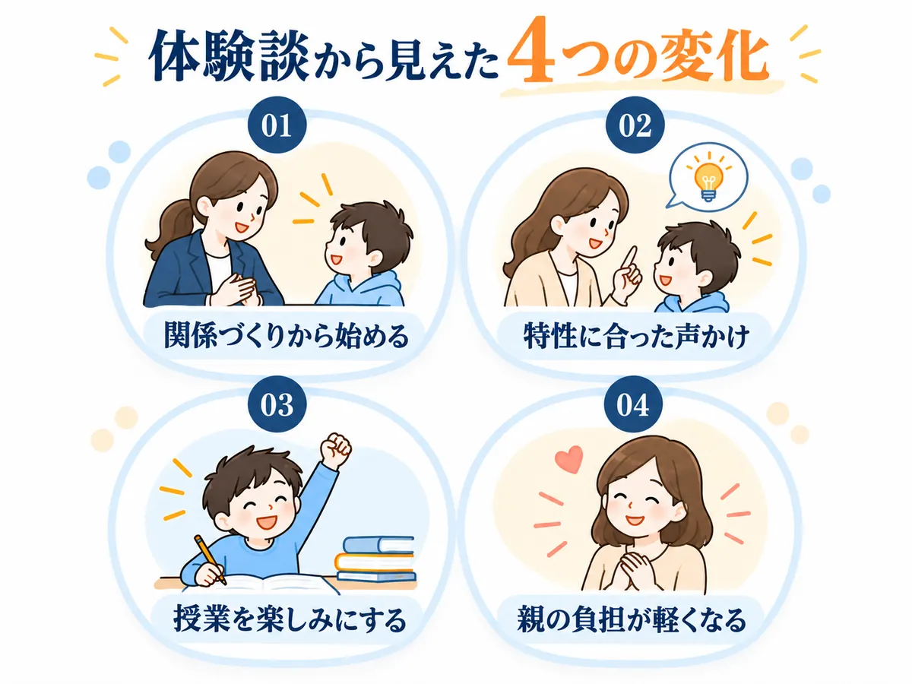
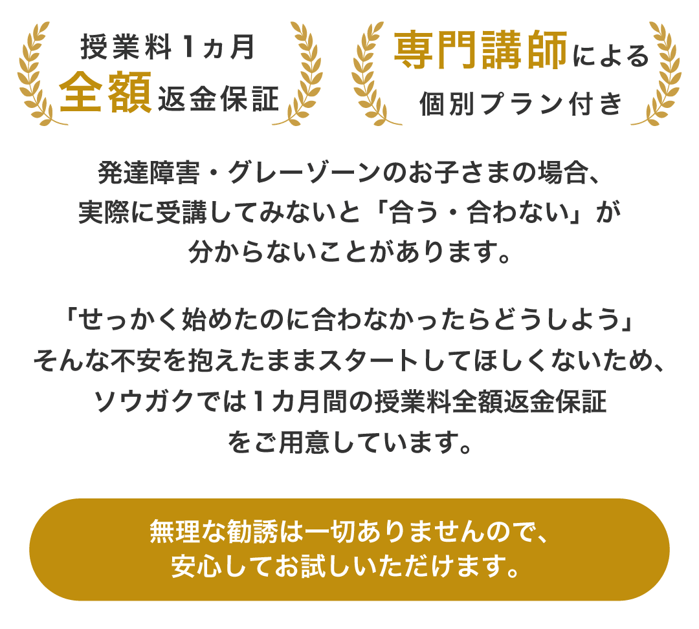

発達特性のある子の勉強法。
何度教えても進まないなら、
「もっとやらせる」前に見たいことがあります。

漢字も覚えられなくて…。
同じところで止まるんです。
止まる場所は違うんです。
見直すところも変わります。
相談先も紹介しますね。
※よくある迷いを編集部が会話形式にしたものです（人物はイメージ）。
＼先にサービスを見たい方はこちら／
この悩みを相談できるサービスを見る ↓宿題・漢字・算数は、どこで止まるかを分けて見る

何度説明しても、
同じところで止まる…。
「勉強が苦手」とひとまとめにすると、次に何を変えればいいかが決まりません。
まずは、止まっている場所を分けて見てみましょう。
- 宿題・集中：始める前／途中で切れる／止まると戻れない
- 漢字：読む／書く／覚える
- 算数：数の理解／計算／文章題／手順
たとえば、始める前で止まるなら、最初の1問だけにする。
途中で切れるなら、短く区切る。
漢字が覚えられないなら、読めるのか・書けないのかを先に分ける。
同じ説明を何度もくり返すより、
止まっている所だけ、やり方を変える。
家で教えるとぶつかるなら、学ぶ形を変えていい

「さっき説明したよね」って、
また言ってしまった…。
親がもっと上手に教えれば全部解決する、とは限りません。
宿題のたびに先生役までやって親子とも疲れるなら、勉強を見る役割を家庭の外に出すのも一つです。
学校に行きづらい時期も同じです。
家で続けられる量にする。オンラインで1対1にする。学ぶ形を変える選択肢もあります。
※ここでは、不登校全般の進路や居場所ではなく、発達特性があるお子さんの「学習」について扱っています。
親は親のままでいい。
勉強は、任せてもいい。
ここまでの見直しは、どれも家で試せます。
ただ、毎日の宿題のたびに親がひとりで続けるのは、かんたんではありません。
家だけだと、ここで行き詰まりやすい
- どこでつまずいているのか、家では見分けきれない
- 説明の仕方を変えても、なかなか伝わらない
- 教えるたびに、親子でぶつかってしまう
- 任せても、授業の様子や家での困りごとを相談できない
1つでも当てはまったら、勉強を家庭の外に任せるタイミングです
この4つを、まとめて任せられるのが、
発達障害・グレーゾーン専門の
オンライン家庭教師
＼ソウガク／
おすすめポイント
- 発達障害・グレーゾーン専門
- 専門機関の研修を受けた認定講師
- アセスメントから個別指導計画
- 毎回の指導報告＋教師/本部チャット
- 無料体験2回＋1カ月返金保証
- 無料体験
- 2回
- 1回目は保護者面談も可
- 入会後継続率
- 96.7%
- 公式LP掲載
- 認定講師
- 100%
- 専門研修受講済み（公式LP掲載）
- 返金保証
- 1カ月
- 授業料全額（条件あり・入会金は対象外）
＼無料体験2回・1回目は保護者面談も可／
ソウガクの公式サイトを見てみる公式LPでは、入会前後の不安に備えた仕組みが次のように案内されています。


先生は、一般社団法人 発達凸凹アソシエーションによる教師研修と、座学のマニュアル研修を受けた社会人講師です。公式LPでは「専門機関監修（一般社団法人 発達凸凹アソシエーション）」と案内されています。
保護者向けの勉強会や相談窓口もあり、入会後も同じ先生が担当します。

毎回の指導報告があるので、親がそのたびに「今日は何をやったの？」「どこまで分かった？」と確認し続けなくてもいい。
家で困ったことがあれば、教師や本部に共有できます。
授業をお願いしたあとも、また親だけが先生役に戻らなくていい仕組みです。
体験の2回だけで「合う・合わない」を決め切れなくても、入会後も、条件を満たせば最初の1カ月分の授業料が返金対象になります。
向いている人
- 塾が合わなかった
- つまずきから見てほしい
- 授業後も相談したい
体験で確認したいこと
- オンラインとの相性
- 学年に合った授業時間
- 先生との相性
画面越しの授業に抵抗がないか、集中しやすい授業時間はどれか、先生と話せそうか。
このあたりは、入会前の無料体験で確かめられます。
体験談｜「その子に合う学び方」を相談できたケース
公式サイト掲載の保護者の声（岡山県・中学2年生）
初めは緊張もあり、集中が続きにくい場面がありました。それまで、子どものタイプに合わせた学習方法を相談できる先生になかなか出会えなかったそうです。
複数回の体験を通じて、先生と一緒に小さく「できる」を積み上げ、特性に合わせて学習スタイルを相談できる点に助けられた、と紹介されています。
まずは今の様子から、無料体験で相談してみてください。
※よくある迷いを編集部が会話形式にしたものです（人物はイメージ）。
返金保証の条件と入会金に注意
返金保証は、初回授業日から30日以内に連絡した、初めて利用する家庭（1世帯1回）が対象です。最低1回の授業受講が必要で、対象は1カ月分の受講料（小学生25分/50分、中学生・高校生35分/60分の各月4回までのコース）です。
入会金22,000円（税込）は別途かかり、返金の対象外です。オンラインが合うかどうかは、無料体験で確認しましょう。
＼1回目は保護者だけの面談もOK／
ソウガクの無料体験を詳しく見る保護者の声から見えたこと

ここからは、ソウガク公式サイトに掲載されている保護者・生徒の声を、今回の悩みに沿って紹介します。
成果を保証するものではありませんが、「どんなところに変化を感じたのか」を見る材料にはなります。
※以下はソウガク公式サイト掲載の体験談を編集部が要約したものです。個人の感想であり、同様の結果を保証するものではありません。
家で教えると、ケンカになってしまう
家で私が教えると、つい言いすぎてしまう…。
公式サイト掲載の保護者の声（小学4年生・ADHDの診断あり・普通級）
学校へ行ける日が減り、勉強の遅れが気になっていました。家で保護者が勉強を見ると、イライラして親子で言い合いになることもあったそうです。
オンラインで週1回学ぶ習慣ができたことで、保護者が「ずっと自分が見なければ」と抱えていた負担が軽くなった、と紹介されています。
「親が全部見なくていい」と思えたことが助けになった
勉強の習慣だけでなく、保護者自身の負担にも変化があった例です。
親がもっと上手に教えられるようになることだけが答えではありません。
家庭の外に、お子さんの困り方を一緒に見てくれる人を増やす。それも一つの方法です。
オンラインで、座っていられるか不安

画面の前に座って、授業を受けられるのかな…。
公式サイト掲載の保護者の声（中学2年生・特別支援学級）
勉強への苦手意識があり、初回の体験では落ち着いて画面の前に座ることも難しかったそうです。先生は急いで授業を進めず、時間をかけて関係をつくりました。
その後は授業の時間を楽しみにするようになり、勉強への苦手意識にも変化を感じている、と紹介されています。
最初から「ちゃんと受けられる子」でなくても、関係づくりから始めたケース
オンラインだから集中できる、とは限りません。合うかどうかは体験で見ておくのが確実です。
無理に「大丈夫です」とは言いません。
子どもによって、先生との相性も、画面越しの授業が合うかどうかも違うからです。
だから、入会してから悩むのではなく、先に体験で見ておく。
集中が切れそうなとき、先生はどう関わる？

公式サイト掲載の生徒・保護者の声（小学5年生）
授業中に集中が切れそうになる場面でも、先生の声かけで再び勉強に向かう様子があったそうです。
本人も先生との授業を楽しみにしている、と保護者の声が掲載されています。
集中が切れたときに、もう一度戻れる声かけをしてくれた
集中が切れることを前提にした関わりがあるかは、体験で見ておきたいポイントです。
発達特性を理解した関わりかどうかは、こうした場面に表れます。
ほかの保護者の声も見る▼
毎回の指導報告も確認できる（中学3年生・保護者）
学校の授業についていけず意欲を失っていましたが、体験時にタブレット画面へ向き合う姿が見られたそうです。先生の声かけと、毎回の指導報告を確認できることも評価されています。
毎回やり方を変えて伝えてくれる（小学2年生・保護者）
数の理解や計算に難しさがあるお子さんに、先生が毎回やり方を変えながら分かりやすく伝えてくれている、という声です。
公式の声から見えた、4つの変化

- 最初から50分集中できなくても、関係づくりから始めている例がある（中学2年生・保護者）
- 特性に合わせた声かけや学び方を、保護者が評価している（小学5年生・保護者）
- 授業そのものを楽しみにするようになった例がある（中学2年生・小学5年生）
- 親の「自分が全部見なければ」という負担が軽くなった例もある（小学4年生・保護者）
▶ソウガクの無料体験を公式サイトで見る└1回目は保護者だけの面談にもできます
まずは2回の無料体験から

ここで紹介したのは、あくまで他のご家庭の例です。
お子さんにも同じ変化が起きるとは限りません。
だからこそ、まず2回の無料体験で相性を見て、入会後も条件を満たせば最初の1カ月の授業料を返金できる仕組みがあります。
段階1｜入会前は無料体験2回
1回目を保護者と先生の面談にして、そこで話した内容をもとに、2回目でお子さんの授業を受けることもできます。
体験を担当するのは、入会後に実際に担当する予定の先生です。

段階2｜入会後も最初の1カ月まで
「体験では良さそうだった。でも続けてみたら合わなかったら？」
発達特性のあるお子さんは、1〜2回の体験だけでは相性を判断しきれないこともあります。
そこまで心配する家庭のために、ソウガクは授業料1カ月分の全額返金保証を用意しています。

※返金保証には条件があります。対象は1カ月分の受講料で、入会金は対象外です。詳細は下記をご確認ください。
返金保証の条件に注意
初回授業日から30日以内に連絡した、初めて利用する家庭（1世帯1回）が対象です。最低1回の授業受講が必要で、返金されるのは1カ月分の受講料です（入会金は対象外）。
対象は小学生25分/50分、中学生・高校生35分/60分の各月4回までのコース。詳細は申込前に公式サイトで最新条件を確認してください。
「家庭教師を始める」と、今ここで決めなくて大丈夫です。
まずは、今どこで困っているのか。
どんな先生なら話せそうか。
どんな進め方なら続けられそうか。
一度、親子の外にいる人と整理してみる。
そのくらいの気持ちで、体験を使っていいと思います。
料金はいくらかかる？
子どもに合いそうでも、続けられる金額かどうかは大事です。
「あとから教材費が増えないかな」
「結局、月にいくらかかるんだろう」
申し込む前に、ここも見ておきましょう。
表は横にスクロール可能
| 学年 | 短いコース（月4回） | 長いコース（月4回） |
|---|---|---|
| 小学生 | 25分 13,200円 | 50分 22,000円 |
| 中学生 | 35分 18,480円 | 60分 26,400円 |
| 高校生 | 35分 21,560円 | 60分 29,920円 |
※すべて税込。入会金22,000円（税込）は別途。
- 保証金・月会費・更新費・教師交代費は0円
- 受験生割増なし・学年ごとの料金UPなし
- 科目数による料金UPなし
- 高額教材の販売なし
安いかどうかだけではなく、無理なく続けられるか。
料金も含めて「うちには合いそうか」を、体験のあとで考えて大丈夫です。
よくある質問

診断がついていなくても受けられますか？
はい。診断がなくても、グレーゾーンでも受講できます。診断名の申告や手帳・受給者証の提出も不要です。
集中力が続かなくても大丈夫？
集中が続きにくいお子さん向けに、小学生には25分、中高生には35分の短時間コースがあります。会話やゲーム要素も取り入れながら進める工夫があります。
先生が合わなかったら？
教師の交代は何度でも無料です。担当教師の性別希望も伝えられます。
授業中、親はずっとそばにいる必要がありますか？
初回はできる限り同席をお願いしていますが、その後は保護者が家にいなくても受講できます。指導内容は専用アプリで確認できます。
体験後にしつこく勧誘されませんか？
公式FAQでは、体験後の無理な勧誘は一切しないと案内されています。
1カ月全額返金保証は、本当に全額戻りますか？
対象は1カ月分の受講料で、入会金は対象外です。初回授業日から30日以内、最低1回の授業受講、保証期間内の連絡などの条件があります。対象コース・回数にも条件があるため、申込前に公式サイトで最新条件を確認してください。
迷ったら、まず体験で確かめる
お子さんのことだから、簡単には決められないと思います。
「本当に合うのかな」
「また続かなかったらどうしよう」
「先生との相性は大丈夫かな」
その不安を、ページだけで全部消すことはできません。
だから、まず実際の先生と話して、お子さんの様子を見てもらう。
「ちょっと違うな」と思えば、入会しなくていい。
「この先生なら話せそう」「このやり方なら続けられるかも」と思えたら、そのときに考えればいいと思います。
勉強のことを、これからも親子だけで何とかし続けなくてもいい。
お子さんに合う学び方を探す最初の一歩として、無料体験を使ってみてください。
- 無料体験2回（1回目は保護者面談も可）
- 同じ先生が入会後も担当
- 体験後に個別指導計画
- 授業料1カ月分返金保証※
※掲載情報は2026年10月5日時点の各社公式情報をもとに作成しています。最新の料金・サービス内容・適用条件は各公式サイトでご確認ください。
このページの運営者
- サイト名
- わが子の学び方ガイド
- 運営者
- わが子の学び方ガイド編集部（運営：ハコぶファミリー）
- お問い合わせ
- ハコぶファミリー お問い合わせ
当ページは、紹介しているサービスの運営会社が作成したものではありません。サービスの申込・利用に関するお問い合わせは、各サービスの公式サイトへお願いします。